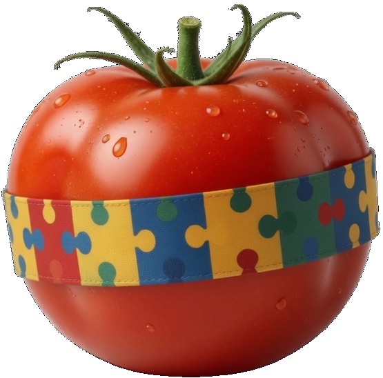
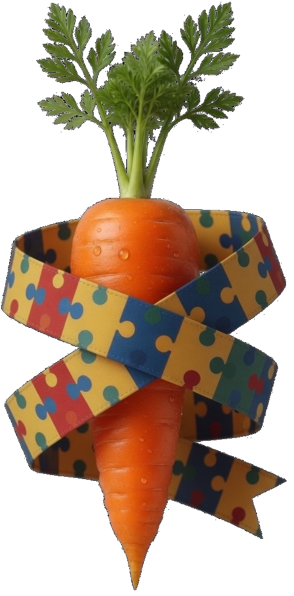
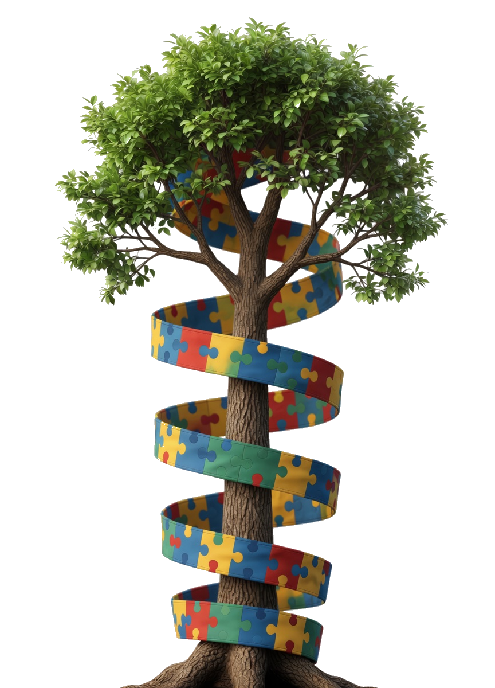

Building Stronger Roots for Families Raising Children with Autism
Our Mission is to connect Special Families with tools, support, and opportunities to strengthen their team. Our goal is to return more parents with special needs children to the workforce through natural relationships involving communication, community, and farming.
The stronger the roots, the more one can grow.
“Being on the farm helped my son open up in ways I hadn’t seen before. He’s more curious, eats better, and even talks about ‘his’ chickens at home.”
Real Roots, Real Results
“With the physical and emotional support Growing Roots provided me and my child I was able to overcome my situation and get my job back. They helped me feel like I could be both a great mom and a great professional again.”
All programs are offered at no cost thanks to generous donors and community partners.
Farm Roots Program

Growing Stronger Through Soil, Animals, and Fresh Harvests: Families can experience the benefits of small-scale agriculture — combining nutrition, movement, social connection, and hands-on learning in one welcoming outdoor setting.
At The Growing Roots Project, we believe real growth happens when children and families connect directly with nature. Our Farm Roots Program brings small groups to carefully selected family-scale farms (under 200 acres) where calm plants and animals create a living classroom for development, regulation, and joy.
What Happens on a Farm Roots Day?
- Gentle interaction with calm farm animals (chickens, goats, rabbits, sheep, and more) in controlled, sensory-friendly settings
- Hands-on planting, tending, and harvesting safe, easy-to-grow crops
- Sensory exploration of soil, plants, and natural textures — supporting regulation, curiosity, and comfort with new foods
- Harvesting fresh tomatoes, lettuce, herbs, and other produce — plus simple packaging and transport skills
- Farm-fresh breads, meals, and snacks made from the day’s harvest
- Structured social time with peers and supportive staff in a calm rural setting

Benefits We Target
Nutritional Foundations Hyper-local, nutrient-rich foods that support focus, energy, and healthy routines around eating.
We try to connect small farms with families to either take delivery of farm fresh goods for their children in need of a biodiverse diet or equip families to take some of the nutrient-dense farm foods home and empower them to grow resilient vegetables and cultivate eggs from resilient layers. A well-nourished body and brain create the energy families need to move forward.
Active Growth Natural movement through meaningful tasks, avoiding the risks of team sports.
Providing children and adults with productive physical activities—with a focus on programs designed for children with autism and sensory-friendly movement on immersive farm days—helps support regulation and development.
Social Connections Low-pressure interactions with animals, peers, and farmers that build communication and confidence.
Community-building events, parent support circles, structured socialization opportunities for children, and connections strengthened through shared farm activities. We reduce isolation so families feel seen, supported, and part of something bigger.
Life Skills & Independence Caring for animals, following routines, and helping with safe farm tasks build confidence and everyday abilities that support greater independence over time.
Children take part in supervised, age-appropriate care for animals—feeding, gentle handling, and simple routines that build responsibility and confidence. Those hands-on moments add up to real life experience: patience, safety awareness, and everyday skills that help young people grow toward doing more on their own.
All visits are supervised by trained staff or volunteers experienced with autism. Farms are pre-screened for safety, calmness, and accessibility. Sessions can be half-day or full-day, with transportation support for participating families when available.
From Soil to Table — Roots That Nourish the Whole Family
Relationship Recalibration Program
Support is available online or in your home—wherever you feel comfortable and focused. A relationship coach with experience alongside families navigating autism and special needs will meet with you, listen to what is going on, and help translate concerns into concrete next steps.
You will receive practical tools and strategies shaped for your relationships and daily environment—not a generic script—so you can strengthen communication, routines, and connection in ways that fit your family.
PPECC & Special-Needs Childcare Support
We actively work to help fund PPECC placements and special-needs day cares that are equipped to welcome children who need consistent, skilled supervision. Reliable options in the community mean caregivers are not choosing between safety at home and earning a living—they can know their child is in a setting designed for their needs.
When those programs are staffed and resourced well, parents gain room to step back into the workforce, keep career momentum, and participate in neighborhood and civic life—with less isolation and more stability for the whole family. If you are unsure how PPECC is defined in your area, we will help you navigate what funding and placement pathways may apply.
Help Families Grow Their Roots

Ways to Help
- Donate — Every gift directly funds nutrition support, Farm Roots visits, activity programs, and career training.
- Volunteer — Join us as a mentor, coach, event helper, or Farm Buddy on visit days.
- Partner — Businesses and organizations: offer flexible opportunities or sponsor a family.
- Host a Farm — Small farm owners: partner with us to host safe, therapeutic visits.
- Sponsor a Harvest — Fund transportation, produce packaging, or session costs.
- Volunteer as a Farm Buddy — Help supervise visits and support participants in the field.
- Advocate — Share our mission and help reduce stigma around autism and working parenthood.